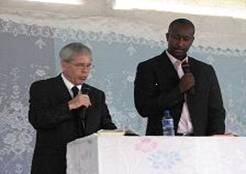
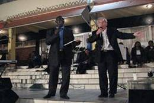
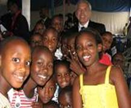
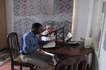

Recent Word
Out of Africa
We were amazed at how many times God set up divine appointments and worked on our behalf during this trip to Burundi and Rwanda.
On this trip held two small crusades rather then one larger one. In Bujumbura, Burundi Bishop Francois Sebagabo hosted the Lightning and Thunder Ministry Crusade. Each meeting Dick gave a salvation message and souls came to the saving knowledge of Jesus Christ. Many were healed and filled. The praise and worship was awesome and the crusade was great.
The most Awesome thing happened in Burundi. Dick was invited to minister the Word of the Lord to the President and his guests at the Presidents Palace on Sunday evening. This took place through a chain of events that only God could have arranged.. It is amazing when God lets you know with out a shadow of doubt that He knows right where you are and what you are doing. Ps. 37:23 says,” The steps of a good man are ordered of the Lord, and He delights in his ways”! We know God was looking down with smiles.
We were blessed to see the president of this country (Pierre Nkurunziza) not only join in the worship but at times led the worship. We danced and praised God until late that night.
Outreach in the Market Place
Dick, Roger and our driver Ageda went to the busy market place in Bujumbura where there were many children there begging, the poor and the lame. They passed through the crowds of people and slipped small amounts of money to the children.
In Rwanda God showed Himself faithful over and over as we ministered at the 4 night crusade held at the Kimironk Parish. We praise God for Pastor Peter, Pastor Isaya and Pastor Roger Brubeck in Kigali.
The most Awesome thing that happened in Kigali was that these pastors had scheduled Dick to minister the Word of God for four days during the prime time of 11:00 to 11:45 on the most powerful Christian radio station in the country of Rwanda. The anointing was strong as the Word went across the air waves and many were calling in with testimonies of salvations, healing’s and finding hope and encouragement in the messages. Dick had words of knowledge and called them out on the air. Telling people to believe God and by laying their hands on the radio they would receive the anointing that was evident for them.
Many received the very thing that God had spoken and they were thrilled that God would use even the radio waves to bring the answers to their prayers. The phones at the station were ringing, as people called in as well as Pastor Peters cell phone. Several came out to the crusade meetings after hearing the radio.
Outreach in the Hospital
The team went to a hospital where there was a group of patience gathered to hear the preaching of the gospel. After the message we prayed for many of the sick and fed them with the milk and fruit that we had taken for them. Dick preached a total of 15 times in 11 days on this trip, his voice got weak, but with God’s touch and a lot of hot Africa tea with honey he was able to keep a strong voice.
AWESOME TRIP!
-Dick and Rose Kessler